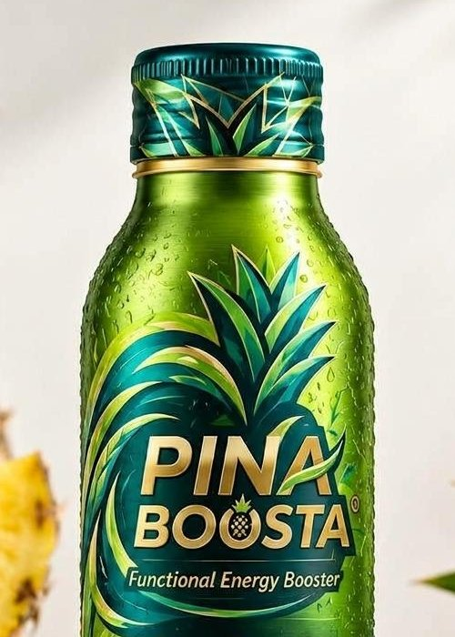

Most energy drinks start in a lab. Ours starts in a field.
Keep scrollingScroll sideways
Pina Boosta comes from a pineapple estate, not a lab. Here’s how a fruit from Pontian, Johor becomes the boost in your hand.
Most energy drinks start in a lab. Ours starts in a field.
Keep scrollingScroll sideways

Our estate in Pontian, Johor, where pineapple grows with smart irrigation and field monitoring.

The fruit takes its time in the Johor sun. We wait until it’s right.

Harvested on the estate. Our own pineapples help feed Pina Boosta production.

Pineapple elements from Malaysian-grown fruit go into every 150 ml bottle.
Malaysia first. Then numbered drops, then across borders, then further.
Malaysia grows great pineapple. We think it deserves a world-class brand. One with a Malaysian name on the label, made for local shelves first and global ones next.
Our mission is simple to say and hard to do: craft great-tasting, pineapple-based functional drinks from locally grown fruit, build Pina Boosta into a trusted brand at home, then take it into regional and global markets.
Four chapters. We’re writing the first one now.
Malaysia first. Win at home before anywhere else.
We are hereLimited, numbered batches that make every bottle a collectible.
Two or three first export markets, chosen where the interest is.
Convenience-store shelves around the world, with distributor partners behind them.
Pina Boosta is made by Logsco Beverages, a division of Logsco Agri Technology Sdn. Bhd. in Johor. The same group runs the Pontian pineapple estate and the farm technology behind it, so the fruit and the drink come from one family of teams.
Walk the pineapple rows on a guided tour, pick your own, then cool off at the estate café with a cold Pina Boosta.